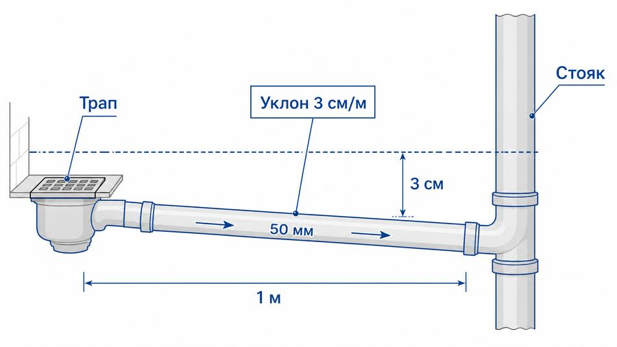
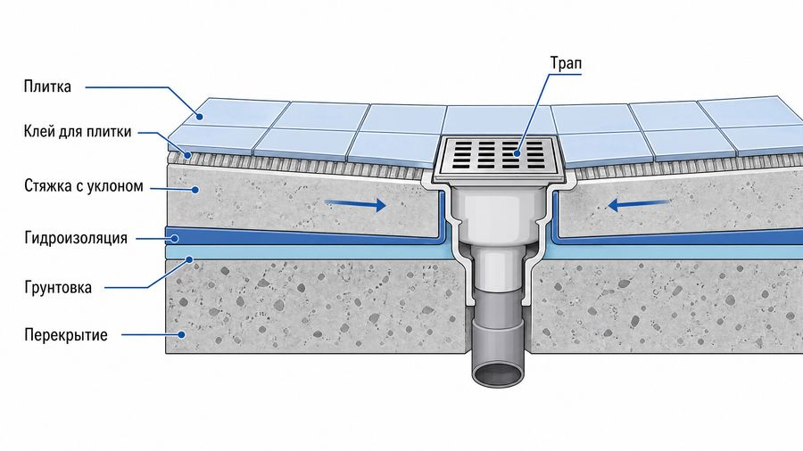

Коротко: Чтобы сделать душ без поддона и не получить лужу на полу, нужно три вещи: канализационная труба 50 мм с уклоном 3 см на 1 метр, высота стяжки от 70 до 120 мм (зависит от длины трассы) и трап с пропускной способностью на 20–30% больше расхода вашего душа. Ошибка с уклоном или высотой трапа стоит 35 000–90 000 руб. переделки. Ниже — точные расчеты, выбор смесителя, смета и чек-лист приемки.
Трап или лоток: что выбрать по высоте и потоку
Прежде чем штробить стены, нужно определиться с типом водоотвода. Обычный точечный трап (100х100 мм) требует меньше места в стяжке, но дает 4 плоскости уклона. Линейный лоток (длиной 500–1000 мм) собирает воду в одну линию, но он выше по монтажу.
| Параметр | Точечный трап | Линейный лоток |
|---|---|---|
| Монтажная высота | 60–110 мм | 80–130 мм |
| Пропускная способность | 24–48 л/мин | 30–60 л/мин |
| Уклон плитки | 4 плоскости по 1,5–2% | 1 плоскость по 1,5–2% |
| Цена (2026) | 2 500–8 000 руб. | 7 000–25 000 руб. |
| Сложность укладки | Высокая (много подрезки) | Средняя |
Правило выбора: если вы ставите обычную лейку (10–12 л/мин), хватит точечного трапа. Если планируете тропический душ (верхняя лейка 200–300 мм с расходом 20–25 л/мин), берите трап с реальной пропускной способностью от 30 л/мин.
Канализация: расчет уклона и высоты пола
Самый критичный этап. По СП 30.13330.2020 для труб 50 мм минимальный уклон — 0,03 (3 см на 1 метр). Если сделать меньше, волосы и мыло быстро забьют трубу.
Простой расчет: почему пол поднимется на 11 см
Возьмем ванную 4 м², душевую 900×900 мм. Расстояние от трапа до врезки в стояк — 1,8 м.
- Уклон трубы: 1,8 м × 3 см = 5,4 см (перепад).
- Труба 50 мм в стяжке: около 6 см с учетом фитингов.
- Высота трапа: 75 мм (стандарт).
- Плитка с клеем: 15 мм.
В самой высокой точке (у входа в душевую) пирог пола может составить: 54 + 60 + 75 + 15 = 204 мм. Реально, с учетом занижения стяжки, пол поднимется на 70–120 мм. Если вы планировали всего 50 мм, трап не встанет.
Что делать, если высоты не хватает?
- Купить низкий трап (60–65 мм) — экономия 10–15 мм.
- Сократить длину трассы до стояка с 1,8 м до 0,8 м — экономия 30 мм.
- Поднять порог в санузел на 15–20 мм (если позволяет дверь).
- Отказаться от трапа и купить низкий поддон (120–150 мм).

Вода: где вывести смеситель и верхний душ
Для душа без поддона обычно используют трубы PEX или металлопластик 16 мм или 20 мм. Если у вас верхний душ 300 мм и термостат, лучше вести магистраль 20 мм, а на лейку делать отвод 16 мм.
| Элемент | Высота от чистого пола |
|---|---|
| Смеситель (наружный) | 1050–1150 мм |
| Смеситель (скрытый) | 1000–1100 мм (центр) |
| Верхний душ (излив) | 2100–2200 мм |
| Ручная лейка (держатель) | 1100–1200 мм |
| Трап от стены | 250–300 мм (для удобной подрезки плитки) |
Совет: глубина скрытого смесителя у разных брендов отличается на 15–20 мм. Если стена из ГКЛ (75 мм) + плитка (15 мм) — места хватит. Если стена монолитная и штробить можно только 20 мм, ищите модель с монтажной глубиной до 70 мм.
Гидроизоляция: чаша, а не «пятно под трапом»
В душевой без поддона вода может затекать под плитку через швы. Если гидроизоляция сделана только под трапом, через год вы зальете соседей.
Правильный пирог пола:
- Перекрытие.
- Грунтовка (1 слой).
- Черновое выравнивание (10–30 мм).
- Гидроизоляционная мастика (2 слоя, расход 1,6–2,4 кг/м²).
- Гидроизоляционная лента в углах и по периметру.
- Стяжка с уклоном к трапу (30–70 мм).
- Клей (3–6 мм) + Плитка (8–10 мм).
В душевой зоне гидроизоляцию нужно поднимать на стены до 1800–2000 мм. В остальной ванной — до 200 мм от пола. Экономия на гидроизоляции (3 000–6 000 руб.) обернется ремонтом соседям (10 000–40 000 руб.).
Пошаговая инструкция монтажа
- Замерьте ванную. Проверьте высоту от перекрытия до чистого пола (нужно минимум 70–120 мм).
- Выберите трап по высоте и пропускной способности (от 30 л/мин для тропического душа).
- Рассчитайте уклон: 3 см на 1 метр трассы.
- Смонтируйте канализацию 50 мм. Не делайте углы 90°, используйте два отвода по 45°.
- Смонтируйте разводку воды 16/20 мм. Выведите смеситель на 1050 мм, верхний душ — на 2100 мм.
- Сделайте гидроизоляцию пола и стен (2 слоя) с заходом на стены душевой 2000 мм.
- Смонтируйте трап в уровень будущей плитки (допуск 1–2 мм).
- Залейте стяжку с уклоном 1,5–2% к трапу (1,5–2 см на 1 метр).
- После высыхания (5–7 дней для тонкой стяжки) уложите плитку и мозаику.
- Проведите тест проливом (20–30 литров воды). Лужи не должны стоять.
Смета: сколько стоит душ без поддона
Ванная 4 м², душевая 0,9×1,2 м, скрытый смеситель, точечный трап.
| Работа / Материал | Цена |
|---|---|
| Демонтаж старой стяжки и плитки | 8 000–18 000 руб. |
| Трап + канализационные трубы | 5 000–12 000 руб. |
| Смеситель скрытого монтажа | 8 000–25 000 руб. |
| Гидроизоляция (материалы и работа) | 15 000–32 000 руб. |
| Стяжка с уклоном | 10 000–22 000 руб. |
| Укладка плитки/мозаики | 12 000–30 000 руб. |
| Стеклянная перегородка | 18 000–45 000 руб. |
| Итого (эконом/средний) | 76 000–150 000 руб. |

Частые ошибки и цена исправления
| Ошибка | Последствие | Цена переделки |
|---|---|---|
| Уклон канализации менее 2 см/м | Засоры, вода уходит медленно | 20 000–55 000 руб. |
| Трап слабее напора душа | Вода переливается через порог | 25 000–50 000 руб. |
| Уклон плитки 0,5% вместо 2% | Лужи в углах | 12 000–30 000 руб. |
| Нет гидроизоляции стен душа | Плесень, затопление соседей | 36 000–100 000 руб. |
Чек-лист перед заливкой стяжки
- Высота от перекрытия до пола — минимум 70 мм (лучше 100 мм).
- Канализационная труба 50 мм, уклон 3 см на 1 м.
- Пропускная способность трапа минимум 30 л/мин.
- Смеситель выведен на 1000–1100 мм от чистого пола.
- Гидроизоляция на стенах душевой — до 2000 мм.
- Уклон плитки к трапу — 1,5–2%.
- Тест проливом сделан до укладки стекла.
Вопросы и ответы
Какой уклон канализационной трубы для трапа?
Для трубы диаметром 50 мм норматив — 3 см на 1 метр. Допустимый минимум — 2 см, но лучше делать 3 см, чтобы избежать засоров.
Можно ли сделать душ без поддона в панельном доме?
Да, если высота от перекрытия до чистого пола позволяет уложить трап и сделать уклон. В панельных домах часто не хватает высоты, поэтому приходится либо поднимать пол во всей ванной, либо использовать низкий трап 60 мм и сокращать трассу.
Нужен ли фановая стояк для душевого трапа?
Да, если в квартире нет нормальной вентиляции канализации (фановая труба). Без нее гидрозатвор в трапе может срываться, и появится запах.
Чем заделать стык трапа и плитки?
Используйте санитарный герметик (силикон). Жесткая затирка в этом месте треснет через 3–6 месяцев.
Как проверить уклон плитки к трапу?
Проливом воды. Вылейте 10 литров воды в центр душевой. Вода должна уйти за 1–2 минуты, не оставляя луж глубже 2–3 мм.
Источники
Материал подготовлен с опорой на следующие документы и данные:
Дисклеймер
Материалы журнала «Ремонт на примерах» носят информационный характер. Приведённые цены, сроки и нормативы являются ориентировочными: они зависят от региона, состояния объекта, уровня исполнителей и текущей рыночной ситуации, поэтому не могут служить точной сметой или гарантией результата. Перед началом работ проконсультируйтесь со специалистами и проверяйте актуальные требования нормативных документов. Редакция не несёт ответственности за решения, принятые на основании этих материалов.